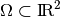

Mindlin-Reissner plate model¶
This brick implements the classical Mindlin-Reissner bending model for isotropic plates.
The Mindlin-Reissner plate model¶
Let  be the reference configuration of the mid-plane of a plate of thickness .
The weak formulation of the Mindlin-Reissner model for isotropic material can be written as follows for the transverse displacement and  the rotation of fibers normal to the mid-plane:
the rotation of fibers normal to the mid-plane:
for all admissible test functions and where:

being a volumic force applied inside the three dimensional plate, and a force applied on the top and bottom surface of the plate,  Young’s modulus,
Young’s modulus,  Poisson’s ratio and the shear correction factor (usually set to 5/6).
Poisson’s ratio and the shear correction factor (usually set to 5/6).
The classical boundary conditions are the following:
- Simple support : a dirichlet condition on .
- Clamped support : a dirichlet condition on both and
- Prescribed transverse force : boundary source term on .
- Prescribed moment : boundary source term on
An important issue of this model is that it is subjected to the so called shear locking so that a direct Galerkin procedure do not give a satisfactory approximation. There is several ways to circumvent the shear locking problem : reduced integration, projection of the transverse shear term, mixed methods. The two first method are proposed.
Reduced integration of the transverse shear term¶
This strategy consists simply to use a lower order integration method to numerically compute the term
This strategy is working properly at least when both the rotation and the transverse displacement is approximated with Q1 quadrilateral element with a degree one reduced integration method (the so-called QUAD4 element).
Projection of the transverse shear term¶
Another strategy comes from the MITC elements (Mixed Interpolation of Tensorial Components) which correspond to a re-interpretation in terms of projection of some mixed methods. The most popular element of this type is the MITC4 which correspond to the quadrilateral element Q1 with a projection of the transverse shear term on a rotated Raviart-Thomas element of lowest degree (RT0) (see [ba-dv1985], [br-ba-fo1989]). This means that the transverse shear term becomes

where is the elementwize  -projection onto the rotated RT0 space. For the moment, the only projection implemented is the previous described one (projection on rotated RT0 space for quadrilateral element). Higher degree elements and triangular elements can be found in the litterature (see [Mi-Zh2002], [br-ba-fo1989], [Duan2014]) and will be under consideration for a future implementation. Note also that since
-projection onto the rotated RT0 space. For the moment, the only projection implemented is the previous described one (projection on rotated RT0 space for quadrilateral element). Higher degree elements and triangular elements can be found in the litterature (see [Mi-Zh2002], [br-ba-fo1989], [Duan2014]) and will be under consideration for a future implementation. Note also that since  , the term reduces to
, the term reduces to
The principle of the definition of an elementary projection is explained if the description of the weak form language (see Elementary transformations) and an example can be found in the file src/getfem_linearized_plates.cc.
Add a Mindlin-Reissner plate model brick to a model¶
The following function defined in src/getfem/getfem_linearized_plates.h allows to add a Mindlin-Reissner plate model term to a transverse displacement u3 and a rotation theta:
size_type add_Mindlin_Reissner_plate_brick
(model, mim, mim_reduced, name_u3, name_theta, param_E,
param_nu, param_epsilon, param_kappa, variant = 2, region)
where name_u3 is name of the variable which represents the transverse displacmenent, name_theta the variable which represents the rotation, ‘param_E’ the Young Modulus, param_nu the poisson ratio, param_epsilon the plate thickness, param_kappa the shear correction factor. Note that since this brick uses the weak form language, the parameter can be regular expression of this language. There are three variants. variant = 0 corresponds to the an unreduced formulation and in that case only the integration method mim is used. Practically this variant is not usable since it is subject to a strong locking phenomenon. variant = 1 corresponds to a reduced integration where mim is used for the rotation term and mim_reduced for the transverse shear term. variant = 2 (default) corresponds to the projection onto a rotated RT0 element of the transverse shear term. For the moment, this is adapted to quadrilateral only (because it is not sufficient to remove the locking phenomenon on triangle elements). Note also that if you use high order elements, the projection on RT0 will reduce the order of the approximation. Returns the brick index in the model.
The projection on rotated RTO element can be added to a model thanks to the following function:
void add_2D_rotated_RT0_projection(model, transname);

目次
前のトピックへ
Bilaplacian and Kirchhoff-Love plate bricks
次のトピックへ
The model tools for the integration of transient problems
Download
Main documentations
- GetFEM++ User documentation
- Python Interface
- Matlab Interface
- Scilab Interface
- Gmm++
- GetFEM++ project